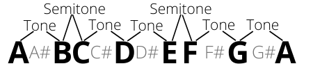
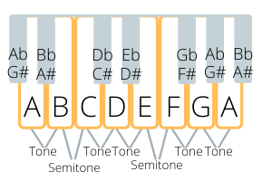
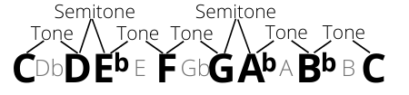
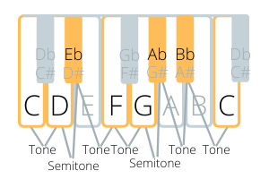

Building the Minor Scale: Tones and Semitones
In western music, the two most popular scales are the major scale and the minor scale. These aren’t the only two scales, but most popular songs use one of these scales. The two scales have different emotional qualities to them. It is often said that the major scale sounds happy, and the minor scale sounds sad. This is true, but it’s an over-simplification. I’ve certainly heard sad songs that use the major scale, and happy songs that use the minor scale, so there are exceptions to the rule. In any case, I believe that a lot of the music you hear in your imagination uses the minor scale. To sing or play those sounds, it is helpful to know what the minor scale is.
Major and minor scales use a different pattern of tones and semitones. We can think about the minor scale in two different ways. First, we can play all the same notes as a major scale, but start on the sixth note instead.
On the piano, we learned that to play the C major, you start on a C and play all the white notes in ascending order until you get to another C. To play a minor scale, you do the same thing, but start on A - the sixth note of C major. In other words, the A minor scale uses all the white notes and none of the black notes, just like the C major scale does. The difference between these two scales is in which note is emphasized more. In A minor, the “A” is emphasized as the main note, and usually a song in the key of A minor will end on an A, whereas in C major, it will usually end on C. So if you know how to play C major, you can also play A minor. The scale sounds “minor” because of the pattern of tones and semitones (see below).

The second way of thinking about the minor scale is to see how it differs from the major scale if you start on the same note. Let’s look at the differences between C major and C minor. To figure out C minor, you start on C, but then use the same pattern of tones and semitones as A minor: tone, semitone, tone, tone, semitone, tone, tone. When you follow this pattern, three notes in C minor are different from C major. The third note, the sixth note, and the seventh note are all lower by one semitone. So E becomes Eb, A becomes Ab, and B becomes Bb. Below is an illustration of C minor.

To summarize, there are two ways of thinking about the minor scale, and both are useful. The first way is to notice that the minor scale uses the same notes as the major scale, but the sixth note of the major scale becomes the first note of the minor scale. The second is to notice that the minor scale is like the major scale, but the third, sixth, and seventh notes are lower by one semitone.
Melody Ear Training Exercise 4: Practicing the Minor Scale
I recommend doing the ear training exercises outlined in the previous chapter for the minor scale as well as the major scale. For Melody Ear Training Exercise 1, you can play the game below, or read the instructions at the bottom of this page for how to practice offline. For Melody Ear Training Exercise 2: Playing by Ear, scroll down below the game for a list of songs that use the minor scale. Melody Ear Training Exercise 3 can be done in the exact same way as with the major scale, just substitute the minor scale.
| Song title | Starting note in the minor scale |
|---|---|
| Scarborough Fair | 1 |
| Greensleeves | 1 |
| Summertime | 5 |
| We Three Kings | 5 |
| Wayfaring Stranger | 1 |